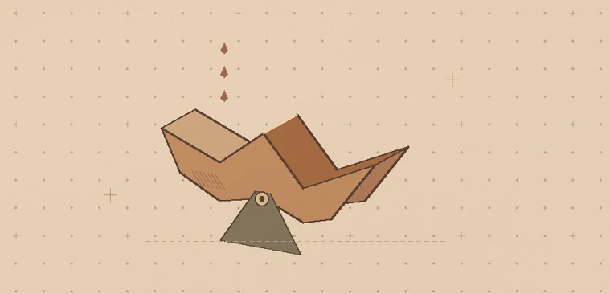
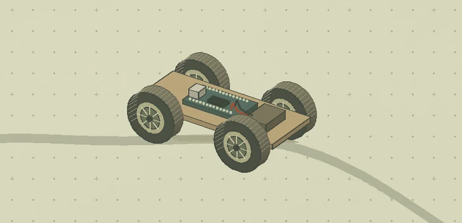

Instrumentation
Tipping-bucket rain gauge
Turning rainfall into a countable sequence of mechanical tips.
Read field note
Rain enters a collector and fills one side of a pivoting bucket. When the balance shifts, that side empties and the other moves under the collector.
Calibration gives each tip a rainfall depth. Counting tips gives the accumulated depth, while the time between tips gives a sense of how quickly rain is falling.

Embedded control
Arduino line-following car
Using a line on the ground as a steering reference for a small vehicle.
Read field note
A line follower repeatedly senses where a line lies relative to the vehicle. A sideways offset gives the controller a reason to steer back towards it.
A bend makes this feedback loop easy to observe. A correction that is too small lets the car drift, while a large correction can send it across the line.

Software systems
API gateway load balancing
Operating a Sub2API gateway on OVH and using upstream health and streaming latency to guide traffic allocation.
Read field note
When a healthy service feels slow. An upstream can pass a probe while some users still wait a long time for a streamed reply to begin. Sub2API Console shows probe results alongside request success rates and the 95th percentile of time to first token. That percentile describes the wait near the slow end of observed requests.
How traffic moves. Sub2API forwards each request to an eligible upstream in its group. The console inspects upstream health and manages scheduling eligibility, priority and load factor for the groups under its control. A circuit breaker can take an unhealthy upstream out of rotation.
Checking a scheduling change. The console’s audit trail distinguishes a scheduling change that was sent from one confirmed by reading the setting back. Request-level lookup then shows which upstream actually handled a request. Together they show whether the setting took effect and where traffic went.